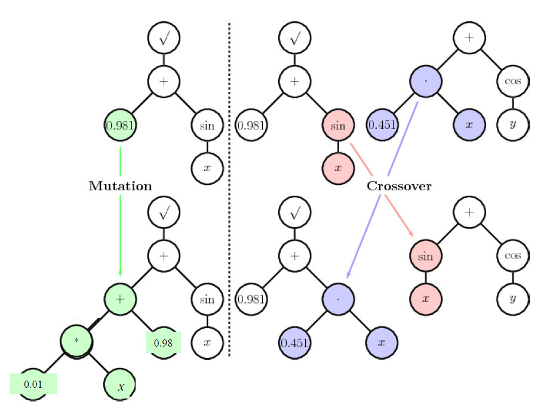
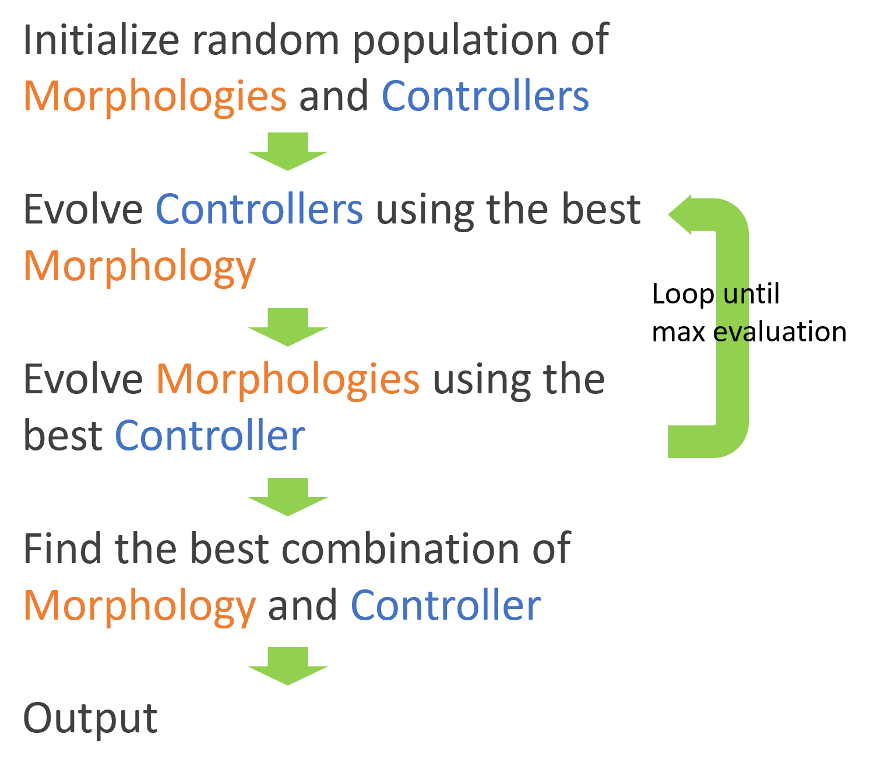

Evolutionary Algorithm
In this project, I experienced the power of Evolutionary Algorithm by performing symbolic regression and evolving soft robots in simulator. C++ is used in this project considering its fast execution speed as a compiled language, CUDA is also used for parallel computing in the evaluation process.
Part 1: Symbolic Regression
In order to get the analytical solution to a given dataset, a function y=f(x) is represented by a binary tree with valid operations +, -, *, /, sin, cos, and a maximum depth of 8. After properly defining how mutation and crossover work in the representation, those functions are evolved and selected by MSE to the dataset.
After thousands of crossovers and mutations, the analytical function can be
found. In this case:
(Left) y = x-(cos(-0.033537-5.754166+sin(x)))*((cos(cos(x)))*((cos(-6.140075-5.866505))*(x-(cos(-9.426290))*(-1.616655+1.700702))))
(Right) y = ((sin(-3.683910)-3.014786)*(cos(x+0.118872-4.404501))-1.759673)*(cos(x+0.243456+7.609952))
Part 2: Evolving Soft Robot
First, I built a physical simulator using the spring-damper model. I used OpenGL for graphic display. In order to make sure the physics works properly, here is a cube bouncing on the ground with no friction.
After setting up the friction model, the robot is able to crawl on the ground. The robot is moving by periodically changing the length of the springs.
A robot contains 2 parts: Morphology and Controller. I tried several ways of representing them as well as the mutation and crossover methods. Then evolved my robot like this:
Finally, here are some of the resulting soft robots.